ASHRAE 55 与 ISO 7730 所采用的 PMV/PPD 思路，源自 P.O. Fanger（房格尔）教授的人体热舒适研究；空气温度、平均辐射温度、相对湿度、气流速度、代谢率与着衣量共同决定人体热感觉。
A HOME WITH ITS OWN INDOOR CLIMATE
我的五恒住宅。
进到家，城市的声音还在身后。
车流、人声、热浪、潮气与尘粒，停在门外。
迎接我的不是一阵冷风。
而是一个健康、安静、可以让身体恢复的家。
空气是新鲜的，温度是柔和的。
湿度不再黏着皮肤，呼吸也更容易变得清澈。
回南天里，柜体、墙面和被褥不再有湿重感。
高温高湿的傍晚，厨房不再像另一个热源。
烹饪时的热、油烟和异味，被有组织地带走。
卫生间保持负压和排风秩序。
潮气与异味，不再向卧室、衣帽间和公共空间蔓延。
新装修和家具持续释放的气味，被长期稀释和过滤。
门窗关闭，也不等于把浑浊留在家里。
夜里，新风仍在更新，卧室却不被风声打扰。
睡眠不只是更安静，而是身体慢慢放下戒备。
心跳和呼吸逐渐放平，整个人进入一夜的恢复。
清晨醒来，没有隔夜的浑浊和异味。
空气像被住宅自己整理过，干净、轻盈、安定。
老人、孩子和长期在家的家人，被这个稳定的室内气候照顾着。
住进去之后真正被感知的五恒
五恒在我家不是五台设备，而是门关上以后，健康、舒适、安静、洁净与可恢复的睡眠，共同形成的居住底色。
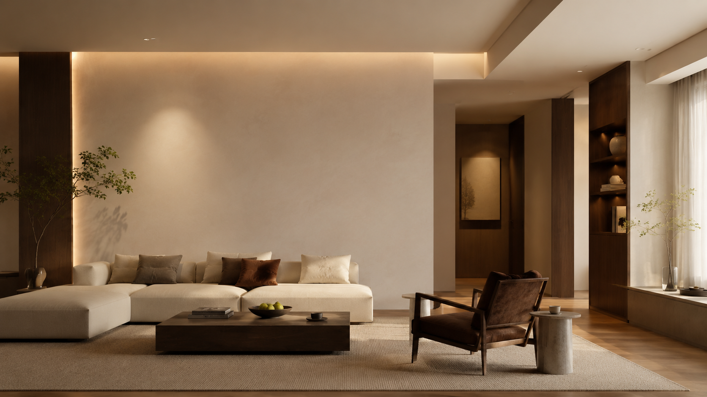
恒温
恒湿
恒氧
恒洁
恒静
五恒品质住宅的
五个“恒”。
五恒并非某一门派的营销语汇。它首先是对住宅热、湿、洁净、新鲜空气与声环境的完整目标定义，随后才是系统如何被组织、被验证、被长期运行。
ORIGIN & AUTHORITIES
五恒并非凭空出现，
它来自住宅室内气候本身的科学边界。
严格地说，国际标准并不以“五恒”作为一个营销名词来定义住宅系统。它们讨论的是更底层、也更可验证的环境变量：热舒适、湿环境、通风与室内空气质量、颗粒物与污染物控制、背景噪声，以及潮湿和霉菌风险。所谓五恒，应该是这些变量在住宅里共同成立后的结果表达，而不是先有名词，再反向寻找设备组合。
ASHRAE 62.2、WELL Air 与 GB/T 18883 将通风、CO₂、颗粒物、化学污染物和异味控制纳入室内空气质量的判断框架。
WHO 对室内潮湿和霉菌风险有明确关注；在长沙这类高湿地区，湿环境必须从“相对湿度”进一步落实到含湿量、露点与表面温度安全。
WELL Sound 与 EN 16798-1 的室内环境参数说明，舒适并非只看冷热，而要同时考虑声环境、空气品质和热环境的连续性。
从标准到住宅结果
热舒适 + 湿环境安全 + 空气质量 + 声环境 + 稳定控制 = 五恒品质住宅的室内气候。
注：本页使用标准名称与官方公开视觉作为技术依据索引；五恒不是上述标准的原文术语，而是住宅室内环境目标在中文语境中的综合表达。
当五恒被放回标准和人体舒适的底层变量之后，问题不应马上跳到设备门派。更重要的是先回到住宅本身：室外环境怎样进入家里，传统配置曾经解决了什么，又在哪些长期停留的时刻露出边界。只有这条链条成立，五恒才不是一个被包装出来的概念，而是居住体验自然提出的要求。
OUTDOOR PRESSURE & INDOOR PROBLEMS
五恒的起点不是设备，
而是住宅长期面对的室外压力与室内环境问题。
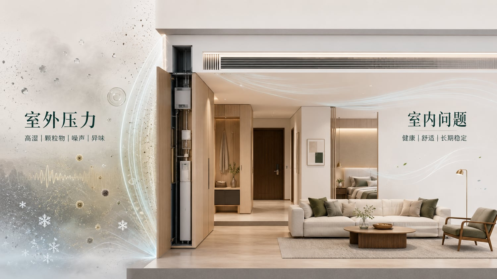
对长沙住宅而言，室外环境并不温和：夏季高温高湿、梅雨期含湿量高、过渡季湿度拖尾明显，冬季又存在湿冷体感；同时，城市空气中的颗粒物、花粉、异味与室外噪声，会在开窗通风时直接进入室内。住宅越追求安静、密闭和高品质装修，室内越需要一套有组织的空气与湿环境管理，而不是仅依赖开窗和单一设备。
空气温度下降以后，水汽仍可能滞留；闷、黏、出汗不爽，往往不是温度单独造成。
湿冷会放大冷感，露点靠近室内表面时，还会带来结露、霉斑和柜体潮湿风险。
花粉、PM、异味、交通噪声与湿空气一起进入，住宅环境会随室外波动而波动。
CO₂、VOC、颗粒物、异味与水汽都在室内产生，不能只靠偶尔开窗解决。
健康维度
空气是否新鲜、洁净、干燥安全。
需要关注 CO₂、颗粒物、VOC、异味、过滤、通风效率、霉菌与潮湿风险。健康问题的特点是长期、累积、隐蔽，不一定马上产生强烈不适，却会持续影响居住环境质量。
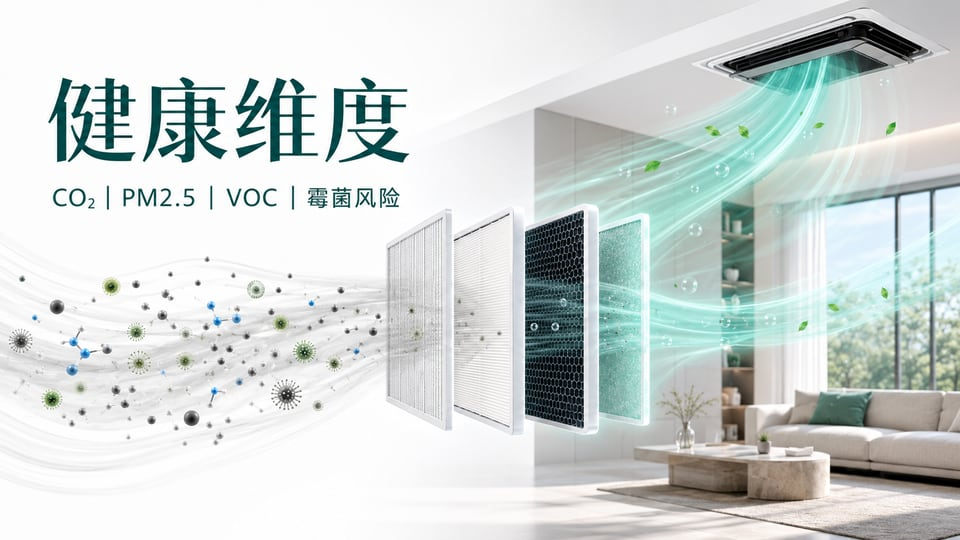
舒适维度
身体是否稳定、轻松、没有被设备打扰。
需要关注空气温度、平均辐射温度、相对湿度、露点、气流速度、背景噪声和空间温差。舒适问题的特点是即时、直接、身体会马上感受到闷、潮、冷、湿冷、直吹或噪声。
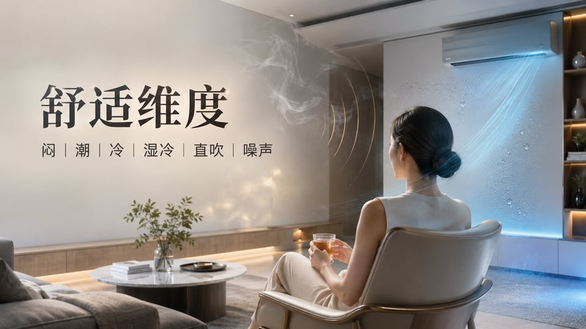
问题成立之后，才讨论系统
传统暖通不是没有价值，而是多数系统只解决健康或舒适中的一部分变量；高品质住宅需要的是两条线同时成立。
LIFE BEFORE WHOLE-HOME CLIMATE
住宅之所以需要五恒，
往往是从一次次不舒服的居住经验里被推出来的。
过去我家的住宅
不是没有空调、地暖和新风，而是每一种设备都只在自己的范围里工作。
以前回家，第一感觉不是放松，而是先判断今天家里闷不闷、潮不潮、有没有异味。
潮湿天，家里像被一层看不见的水汽包住。地面不一定有水，却总觉得脚下发黏；衣柜打开时，被褥和衣物带着湿重的气味。
梅雨季更明显，墙角、柜体背板和地下空间总让人不放心。除湿机可以接一桶水，却很难让整个家真正变得轻盈。
夏天最热的时候，空调要调到 23°C 才觉得不闷。刚开始是凉下来了，可半夜又会被冷醒，肩颈发紧，空气却仍然不够清爽。
客厅人一多，温度显示没有变，身体却开始发黏、发沉；开大风量会吵，会直吹，关小一点又觉得空气停在那里。
厨房做饭时，热、油烟、湿气和气味叠在一起。饭还没吃完，人已经觉得燥、闷、累，烹饪变成了一段需要忍耐的时间。
卫生间排风开着，异味和潮气仍可能慢慢散出来；衣帽间、走廊和卧室门口，有时也会留下说不清的湿味。
新风开着的时候，心理上觉得空气在换；但门窗关久了，卧室还是会有滞留感。夜里不想开窗，又担心空气越睡越浑。
冬天开了暖，脚下是暖的，墙面、窗边和角落却还是带着冷意。
人在沙发上坐久了，身体并没有真正放松，只是从“冷”变成了“勉强不冷”。
老人怕冷，孩子怕闷，长期在家的人对异味、潮气和噪声更敏感。一个房间舒服，不代表整个家都稳定。
这些不舒服单独看都不算严重，合在一起却会慢慢消耗居住品质。
传统系统各自有效，但它们没有把空气、湿度、温度、洁净和安静组织成一个整体。
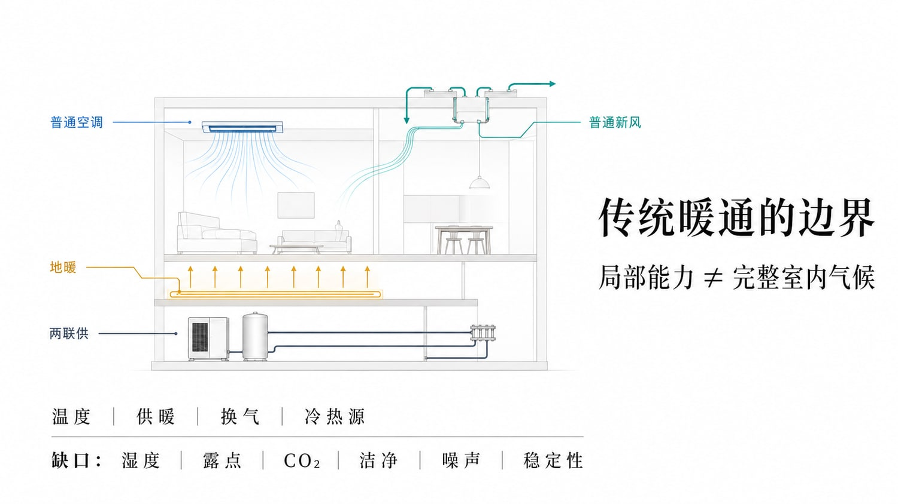
传统系统的共同边界
问题不在于传统系统没有价值，而在于冷、热、换气、除湿、过滤和静音经常被分散处理；居住者感受到的，却是同一个房间里同时发生的闷、潮、冷、吵、浑浊和不稳定。
温度可以下降，但高湿季节的潜热、露点、气流直吹、启停波动与新风品质，通常不在它的核心控制边界内。
脚下温暖可以改善冬季体感，但它不解决夏季除湿、新风、颗粒物、CO₂ 和全年空气更新问题。
有新风不等于舒适空气。若没有温湿处理、过滤等级、气流组织与噪声控制，新风本身也可能带来潮湿、冷风感或设备存在感。
冷热末端更柔和，并不等于温湿解耦已经成立。若缺少独立新风除湿主线，长沙高湿与湿冷仍会限制舒适上限。
Temperature
温度可达标
但温度达标不等于人体热平衡成立。
Humidity
湿度未必受控
潮、闷、湿冷，本质上常常来自含湿量与露点。
Fresh Air
换气不等于清醒
CO₂、异味和空气更新效率需要持续组织。
Clean Air
过滤不等于洁净
颗粒物、压力关系与污染源控制需要协同。
Acoustics
运行不应被感知
风声、设备噪声与气流扰动会直接降低高级感。
为什么需要五恒
五恒不是把设备继续叠加，而是把住宅从“局部设备能力”提升到“整体室内气候结果”：先定义环境目标，再反推系统架构。
ENVIRONMENTAL OUTCOMES
五恒的重点不在“名词数量”，
而在室内环境是否真的形成五项结果。
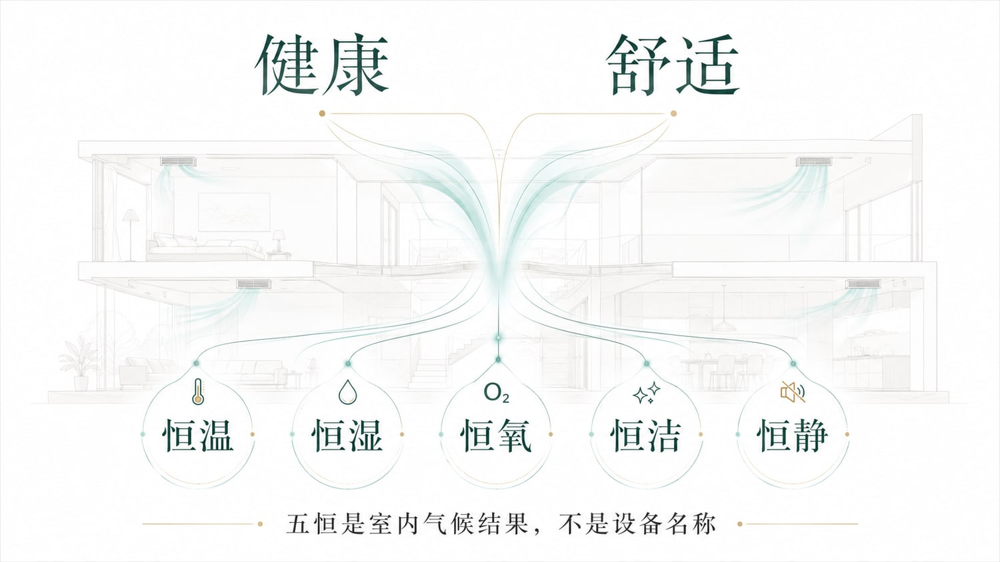
恒温
热环境连续稳定
空气温度与表面温度不再剧烈波动。
恒湿
湿负荷与露点受控
不再用低温掩盖潮湿，也不让结露风险进入室内。
恒氧
空气持续新鲜
换气建立在洁净与压力组织之上，而不只是送入室外空气。
恒洁
洁净度长期可感
颗粒物、异味与滞留感被持续压低，而不是短时改善。
恒静
设备低存在感运行
舒适不依赖明显的风感与设备噪声来提醒自身存在。
FROM OUTCOMES TO COMFORT SCIENCE
五个结果能否成立，
首先要回到人体热平衡。
首先要回到人体热平衡。
温度、湿度、辐射温度、气流速度与人的状态共同决定身体感受；因此，五恒的判断不能停留在设备是否运行，也不能只看一个温度数字。
COMFORT SCIENCE
热舒适不是单一温度判断，
而是热、湿、辐射、气流、代谢与着衣共同作用的结果。
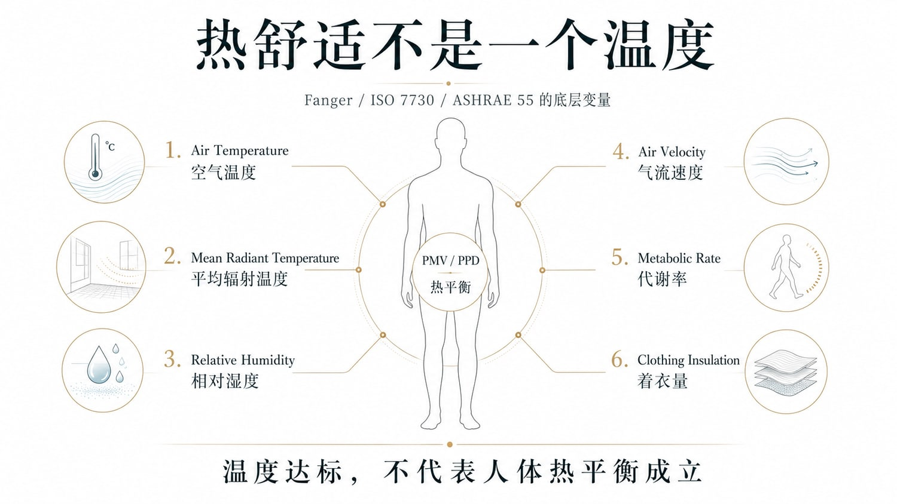
HUMIDITY & DEW POINT
在长沙，先失控的往往不是温度，
而是湿度、含湿量与露点。
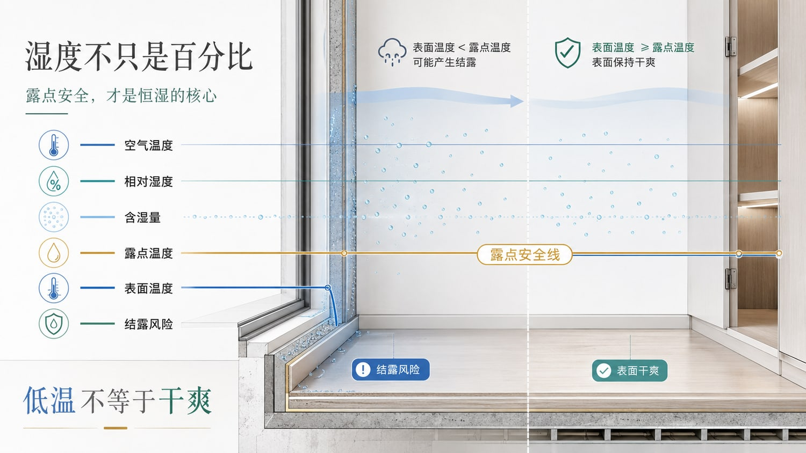
湖南住宅尤为如此。空气温度降低之后，体感并不会自动转化为轻盈与干爽；真正起决定作用的是空气中残余水汽的水平、露点是否处于安全区间，以及围护结构表面结露风险是否得到控制。
10-16°C
温和、轻盈
干爽、放松，适合长期室内停留。
16-21°C
发闷、黏滞
汗液蒸发变慢，空气开始出现“闷”的存在感。
≥21°C
湿冷、结露风险升高
空气含湿量偏高，表面易结露，霉菌风险随之增加。
核心判断
低温并不等于干爽。干爽感的形成，本质上取决于露点安全与含湿量控制。
CHANGSHA CLIMATE
在长沙，真正复杂的不是冷热本身，
而是高湿、高露点与湿冷共同构成的复合问题。
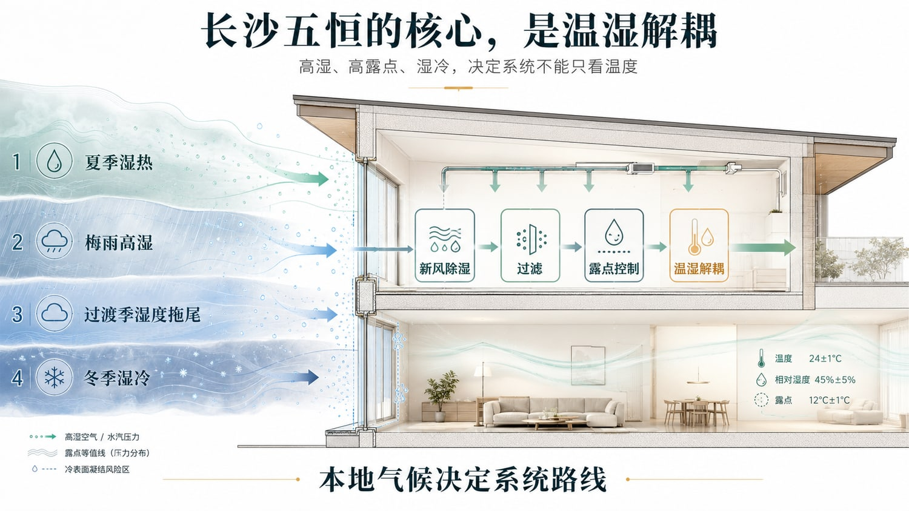
通风过程本身可能持续引入水汽，空气不易干净利落。
温度下降后，体感仍可能停留在黏、闷、沉重的状态。
表面温度偏低时，环境冷感与湿感容易同时出现。
当地下空间被纳入同一住宅系统后，湿负荷与结露边界更需要前置控制。
长沙气候结论
住宅空气系统的起点不应只停留在冷暖，而应从湿负荷、绝对湿度、露点与二氧化碳浓度出发。
FROM CLIMATE TO SYSTEM ROUTE
气候问题被识别之后，
系统路线就不应从末端偏好开始。
系统路线就不应从末端偏好开始。
长沙住宅的关键不是先讨论是否用某一种末端，而是先建立可持续处理新风、潜热、过滤、露点与 CO₂ 的空气主线。
DOAS ROUTE
DOAS 五恒系统的价值，
在于先建立空气主线，再组织多末端协同。
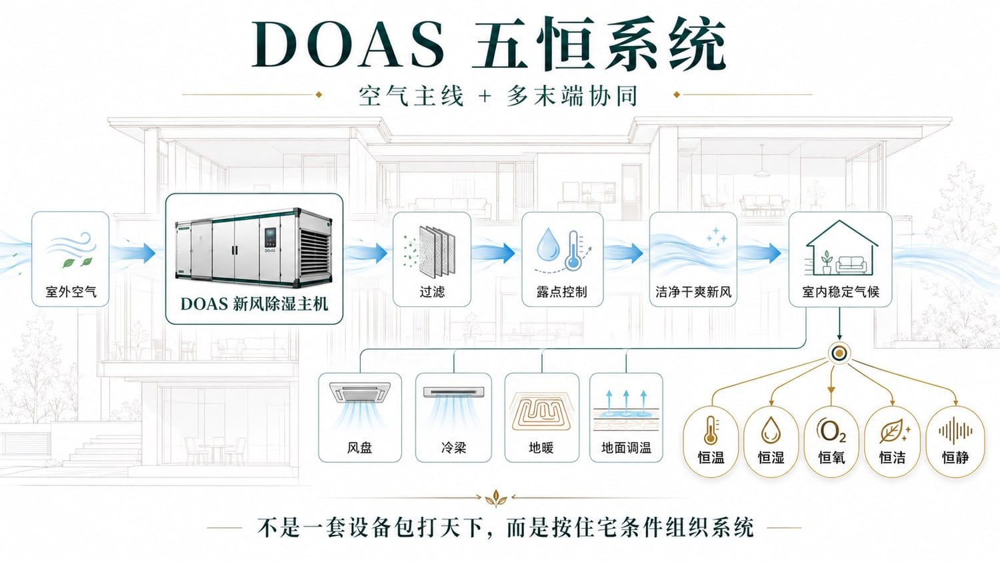
先明确温、湿、洁净度、氧与噪声边界，再谈设备组织。
以新风、过滤、热回收与必要预处理建立室内空气秩序。
先完成除湿、潜热与防结露边界，再讨论更细腻的舒适表达。
风盘、冷梁、地面调温、局部补风与排风按空间特性协同配置。
别墅不应被简单处理为一套系统覆盖全部空间，而应按区域目标分层组织。
DOAS 五恒系统
空气主线 + 潜热控制 + 多末端协同 + 分空间策略
关键不在于形式是否单一，而在于整个住宅室内气候是否被稳定、连续且可验证地组织起来。
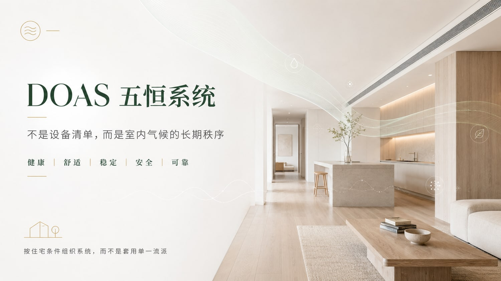
五恒真正改变的，不是设备清单，
而是住宅内部被长期感受到的环境秩序。
当环境目标被定义清楚之后，系统选择便不再停留于设备偏好，而会回到热舒适、湿环境、空气质量与长期稳定性的共同成立。DOAS 五恒系统的价值，正在于以更清晰的空气主线，将这些目标转化为可落地、可验证、可长期运行的住宅实现路径。
回到居住本身
住久以后，我不再总是意识到系统的存在。
我更常感受到的，是回家后声音被隔开，空气始终新鲜，夜里睡得更沉，清晨醒来没有闷、潮、浑浊和异味。家人可以在这里久坐、阅读、休息、入睡，而不必反复和冷热、湿气、噪声、灰尘做交换。五恒最终留下来的，不是设备的存在感，而是一个让身体放松、让睡眠修复、让家人被安静照顾的室内气候。